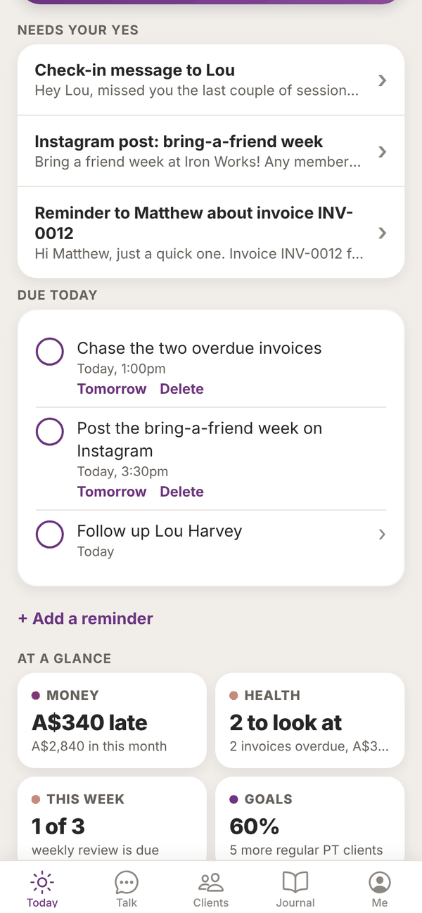
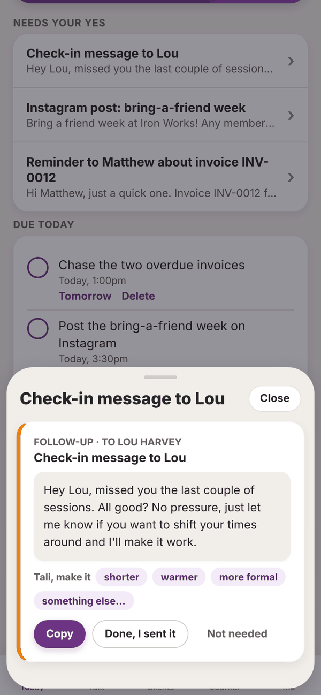
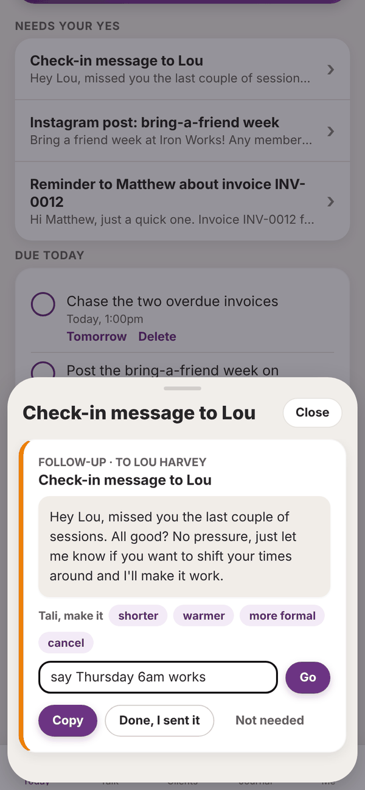
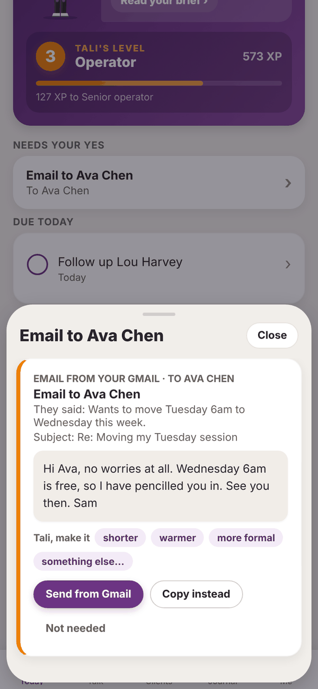
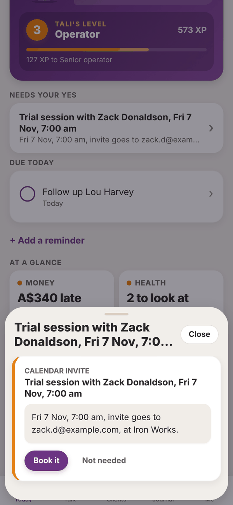
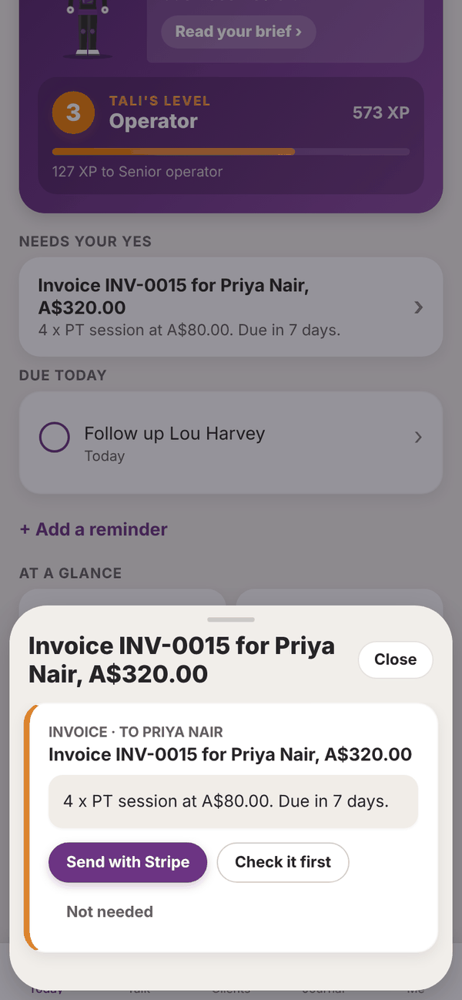

Tali HQ guide
Approvals, Tali never acts without your yes
How drafts wait on Today for your yes, and how to send, rework or clear each kind.
Tali never sends, spends or changes anything on her own. Everything she prepares to go out to another person, a message, an email, an invoice or a calendar booking, waits on Today under Needs your yes until you decide. You can send it, copy it, have her rework it, or tell her it's not needed. Free
Where drafts come from#
- You ask in Talk: "write a follow-up for Lou", "email Ava that Wednesday works", "book Zack in Friday at 7".
- An email comes in to your Gmail or Outlook and needs a reply. Tali HQ
- An enquiry arrives at Tali's own email address. Pro
- One of your Rules, like chasing an overdue invoice. Pro
Open a draft#


- On Today, find Needs your yes. Each row shows the title and who it's to.
- Tap a row. The draft slides up from the bottom with the whole message.
- Read it, then pick what to do (below).
- Tap Close to put it away and decide later.
The label at the top says what kind of draft it is: Message, Follow-up, Invoice reminder, Booking, Email, Invoice, Calendar invite, Email from your Gmail, Email from your Outlook or Email to your Tali address.
Messages, follow-ups and posts#
These are for you to send yourself, by text, DM or wherever you like.
- Copy: copies the message. Paste it into your text or post.
- Done, I sent it: tap once you've sent it. The draft is cleared.
- Not needed: clears it without sending. It asks Sure? first, so tap again to confirm.
If copying doesn't work on your device, press and hold the text to copy it.
Ask Tali to rework a draft Tali HQ#
Under the message, Tali, make it has quick buttons: shorter, warmer, more formal and something else....

- Tap shorter, warmer or more formal, or tap something else... and type what you want, like "say Thursday 6am works", then tap Go.
- "Tali is reworking it..." shows while she works.
- The new version replaces the old one, with "Reworked. Have a read before you send it."
Each rework uses 1 credit. Calendar invites and Stripe invoices can't be reworked.
Emails from your Gmail or Outlook Tali HQ#
When Google or Microsoft is connected, email drafts have a send button.

- Send from Gmail (or Send from Outlook): sends it from your own mailbox (in the same thread when it's a reply). You see "Sent from your Gmail to ..." and the draft clears.
- Copy instead: copy it and send it yourself.
If the email was a reply to something that came in, the draft shows "They said:" with a one line summary, and the subject line.
Calendar bookings Tali HQ#
When your Google or Outlook calendar is connected, Tali can draft a booking.

Tap Book it. It goes into your calendar, and if there's an attendee email, the invite goes to them. You see "Booked. Invite sent to ..." or "Booked in your calendar".
Invoices through Stripe Tali HQ#
When your Stripe is connected, invoices Tali drafts land here too.

- Send with Stripe: Stripe emails the invoice to your client with a pay by card link. It marks itself paid in Tali HQ when they pay.
- Check it first: opens Invoices so you can look it over.
- Add their email: shows instead of Send when the client has no email. Add it on the invoice, then send.
See Invoices.
Replies to Tali's email address Pro#
Replies to enquiries sent to Tali's own address have Send and Copy instead. Send goes out from your connected Gmail or Outlook if you have one, otherwise from Tali's address. See Tali's email address.
Questions#
Will Tali ever send something without me tapping?
No. Every send button needs your tap. Rules on Pro only change things inside Tali HQ, like marking a client as gone quiet. Anything that goes to another person still waits for your yes.
I tapped Not needed by mistake.
The draft is gone from Today. Ask Tali in Talk to write it again.
Do drafts expire?
No, they wait until you decide. If one sits for more than 2 days, it shows up in your business health on Today.
Does Done, I sent it actually send anything?
No. It just tells Tali you've sent it yourself, and clears the draft.
Can I edit a draft by hand?
Not in the app. Copy it and change it wherever you send it, or ask Tali to change it with something else....
Why can't I see the Send from Gmail button?
It only shows when Google is connected with Gmail. Connect it in Me, Settings, Connections. See Gmail and Outlook.